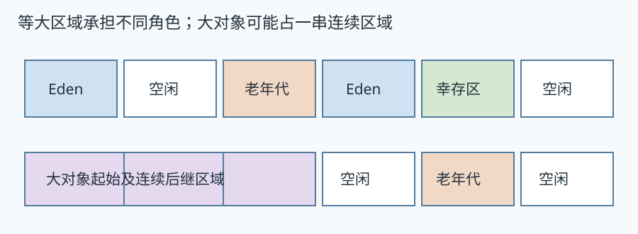
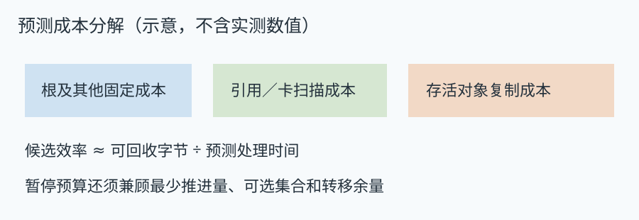

第五篇 · 垃圾收集与运行时协作
第22章 Garbage-First（G1）的分区回收机制
从许多区域中选择一组回收，必须同时知道能拿回多少空间、要扫描多少引用，以及有没有足够转移余量。
本章基于 Java 开发工具包（Java Development Kit，JDK）25.0.5.0.2 与 HotSpot；垃圾收集（Garbage Collection，GC）的实现结论定位到固定 OpenJDK 提交，语言与类库语义单独注明。容量单位采用兆二进制字节（mebibyte，MiB）和千二进制字节（kibibyte，KiB）。前置为对象、分配和执行引擎；源码阅读、运行说明与证据索引相互对应。
22.1 区域与代际角色
22.1.1 区域是空间，代是用途
Garbage-First（G1）把堆划成等大的区域，区域承担Eden、幸存区、老年代或空闲角色；年轻与老年代不要求各占一整段连续地址。一次转移将存活对象送到目标区域，原区域恢复空闲；区域角色改变与对象晋升不是同一操作。
本例显式采用1 MiB区域、128 MiB固定堆；这些数字是教学配置，不是所有G1堆的默认值。每次暂停的Eden、Survivor、Old区域变化可与对象存活条件对应，但区域计数变化不表示逐对象年龄已经测出。

22.1.2 大对象的连续空间需求
按对齐后的对象总大小严格超过区域一半阈值的对象走大对象路径，以起始区域和后继区域占用一串连续区域，末区域可能留尾部浪费。即使总空闲字节足够，若没有满足需要的连续区域也可能分配不成；这与普通年轻代剩余空间不足不同。
本例在1 MiB区域下分配600 KiB数组，日志后来显示Humongous区域从1变0。该数组没有实际内容跨越多个区域，图中的多区域大对象用于说明一般连续空间规则；不能把两者混成同一次实测布局。
22.2 完整回收周期
22.2.1 年轻代、标记、混合的连接
年轻代转移处理Eden／幸存对象。达到启动条件后，Concurrent Start暂停搭载标记起点，之后并发追踪；Remark完成必要闭包及引用处理等工作，随后进行记忆集重建相关工作并到Cleanup处理收尾。准备混合暂停过后，混合回收把年轻区域与选中的老区域一起转移。
并发标记主要识别老区域存活量和候选，不等于在标记期间把全部老对象复制走。年轻代暂停与并发周期可以交错；要用GC编号与开始／结束事件归并，不能把相邻两行直接当成同一次收集。

22.2.2 完整堆回收何时介入
空间不足、转移保障不足或特定请求可能进入完整堆回收。转移失败意味着部分对象未能按原计划移动；运行时必须保留可访问性、调整区域状态并寻找后续恢复路径，不能把失败区域当成全空闲空间。
本例开启ExplicitGCInvokesConcurrent，显式请求启动并发路径；第20章未开启该参数而观察到完整收集。两次行为不能互相覆盖。日志没有记录本次Full GC或转移失败，失败原因按实现分析，不伪造故障输出。
22.3 跨区域引用维护
22.3.1 从写入到暂停扫描
G1前置写屏障按标记状态记录旧引用，后置路径把源卡写脏并按协议进入待处理队列；并发细化扫描卡上的字段，把外来入口纳入对应区域组的记忆集。暂停时还要合并、处理尚未完成的卡并扫描根入口，才能发现收集集合中对象的所有必要引用。
记忆集主要记录指向目标集合的外来入口位置，卡表描述源地址范围；一个卡上可能有多个引用，粗粒度记录也可能带来额外扫描。第20章的起始快照队列与脏卡队列目的不同，不应因都叫缓冲就画成一套数据。

22.3.2 维护成本与扫描成本相互移动
更积极的并发细化可以提前做部分工作，却消耗应用可用的处理器；暂停时未处理卡、记忆集合并及扫描也会改变暂停组成。引用密度高的区域即使存活字节少，也可能需要扫描许多入口。
日志中的Merge Heap Roots、Scan Heap Roots和Object Copy等阶段可解释工作类型；本例开了记忆集与集合决策日志，但未对照改写引用密度测成本，所以不能从某次较短暂停推出共享卡集合的改善百分比。
22.4 暂停预测与回收集合
22.4.1 按收益和预测成本挑选
策略使用历史复制速度、待扫描卡量、根与其他固定成本估计一次暂停。候选组的收益是预期可回收字节，成本包括引用扫描与存活对象复制；按收益／成本排序比单看垃圾比例更接近实际工作。
回收集合必须包含当前年轻区域，老区域按最少推进量、最大数量和剩余时间预算分成初始选择及可选部分。预测误差、运行时竞争和存活变化都可能使实际时间偏离模型。

22.4.2 目标、余量与失败条件
暂停目标是控制策略的输入，不是每次停顿的硬上限。为了避免积累老年代工作，策略有时还必须满足推进要求；初始预测不准、转移速度变化、异常密集引用或资源竞争都能使暂停超出目标。
空闲区域还要同时覆盖新分配和存活转移，预留不是可无条件交给应用的容量。仅把堆压到刚好容纳存活集，会让收集器即使知道哪里有垃圾也缺乏周转空间。
22.5 JDK 25的实现变化
22.5.1 预计一起收集的区域共享卡集合
JDK 25的共享卡集合把预计一起转移的候选区域编为组，使用一个G1CardSet，减少组内关系的重复跟踪与暂停内合并。固定实现以G1CSetCandidateGroup持有组及卡集合，Remark后为候选建立组；不是把全堆所有区域永久合成同一个记忆集。
本次日志在GC(5)中记录22个候选区域形成5组，后续出现混合回收；这支持组策略实际参与本轮。它不构成相对JDK 24的内存节省测量，二进制比较、等价负载和重复样本均未进行。

22.5.2 入向引用数量改进初选估计
初选时精确重建后的记忆集尚不可得，若只按存活量估成本，引用入口极多的区域可能被低估并留到混合周期末尾，造成暂停尖峰。JDK-8351405利用标记期间统计的入向引用数量作为扫描成本估计，改进候选效率排序；固定G1Policy::predict_gc_efficiency中将该估计与复制成本组合。
JDK-8343782负责共享卡集合，二者解决的问题有关但不是同一变更。这里依据25发布说明、维护者的一手说明和当前更新版源码核查；没有将后续版本的写屏障替换或自动堆容量规划提前写入25。
观察与解释边界
CH22-E01取得正常年轻代、Concurrent Start、并发标记、Remark、Cleanup、Prepare Mixed及Mixed，原始GC编号0—7。释放一半长期持有后的GC(5)从22个候选区域形成5组；GC(6)中大对象区域1→0，GC(7)混合暂停后99M→28M。进程退出0。
这些数字是日志显示的近似容量，不是精确载荷账本。没有Full GC或转移失败；InitiatingHeapOccupancyPercent=20且关闭自适应启动阈值是为了呈现可辨认周期，不能作为调优建议。
正常周期已实际记录；没有主动故障、性能对比或跨版本改善比例，失败分支与预算推理按固定实现解释。
来源与回顾
- CH22-S01 JDK 25发布说明：JDK-8343782；共享卡集合的版本归属与目的。
- CH22-S02 收集器维护者说明：JDK-8351405；经Inside Java链接；入向引用估计与混合周期尖峰。
- CH22-S03 区域及分组实现：set_candidates_from_marking；G1CSetCandidateGroup；候选分组及共享卡集合。
- CH22-S04 成本策略实现：G1Policy::predict_gc_efficiency；incoming_refs估计及存活复制成本。
- CH22-S05 回收集合实现：select_candidates_from_marking；初始、最少推进与可选集合。
- CH22-S06 屏障与细化实现：G1BarrierSet::write_ref_field_post_slow；卡写入与后续维护入口。
- CH22-S07 大对象阈值：G1CollectedHeap::is_humongous；对齐后对象总大小严格大于半区域阈值。
源码固定提交：1775ea114f649f0314e4e43eb6c802ff16dfab7c。实现定位和完整命令见证据索引及运行记录；插图表达机制，没有填入推测的时间或地址。
回顾：先确定哪些引用或状态必须保留，再看工作在哪里执行、消耗哪些资源。思考：两个区域垃圾比例相同，引用入口更多者为什么可能更贵？Remark初选时为什么用入向引用数估计？本轮显式请求为什么没有走第20章的Full路径？